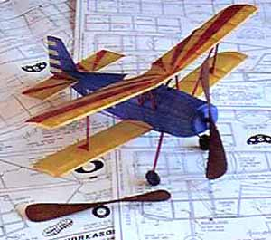
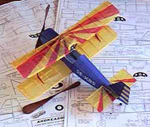
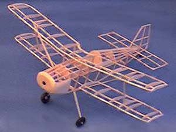
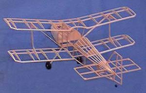

| I built my first Andreason Biplane straight from the Peck Polymers kit around 1984 or 1985. It was a great little flyer, so when the idea of a Mooney Memorial Postal Contest was born in the fall of 1998, I decided to join the fun and build another from plans.
I made just a few changes to the basic structure as designed by Walt Mooney. Most noticeably in the structure of the wing. The main spar is let into the lower side of the ribs, as I did not plan to shrink the tissue on the model, and wanted a smooth surface on the top of the wings. I also included extra ribs on the lower wing to attach the struts. The top wing got pads for the struts, and a center rib to help define the contour of the covering around the trailing edge cutout. The fuselage was also changed a bit from the plans. The top of the fuse and cowl were built up with stringers and formers instead of the paper. I did this to maintain continuity with the stringers behind the cockpit. The only other real change made in the fuselage was to lengthen the landing gear slightly, allowing a 6" diameter prop and ROG flying. |
|

The cowl was made of 4.5# 1/8" sheet, well sanded to contour and lighten the nose. I did not skimp here as my models often need weight in the nose. It also provides a lot of strength for handling and the inevitable meetings with walls.
I made balsa wheels as described by Tom Sanders. Specifically, these wheels have a 1/64" ply core, 1/8" balsa carved for shape, and a 1/16" aluminum tube for the hubs. The black coloring was done with a Magic Marker, and then sealed by dipping in some thinned nitrate dope. After curing, very little weight was added, and I think they are stronger as well. The tailwheel was a little tricky. Previous balsa tailwheels have been "flattened" by repeated taxiing on the concrete floor at Moffett. To prevent this from happening to the Andreason, I first made a wire tail skid. Balsa wheel halves were then turned and sandwiched onto the wire, such that the wire protrudes slightly from the bottom to protect the wheel. All construction was done with thin and medium Cya applied with a piece of bent music wire. This allowed very precise control of amount and placement. Weight of the completed framework as shown is 4.74 grams. The total weight is 7.1 grams, including a carved balsa propellor, and covering. All flying surfaces are covered with condenser paper, colored with art markers. The fuselage is covered with White Esaki, colored with a blue marker. Lettering is the kit decal, the panel is cut from the plan. |
|  |  |
Return to
Mooney Postal info | Model Index
Copyright 1998 - 2015, Thayer Syme. All rights reserved